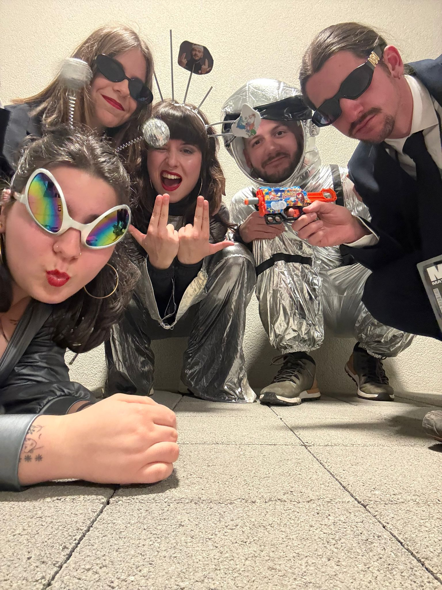
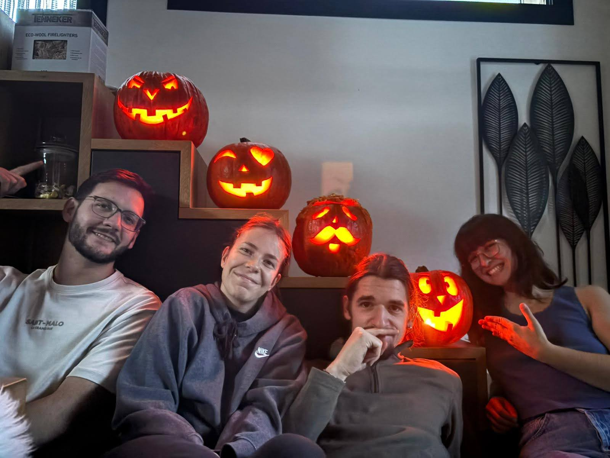
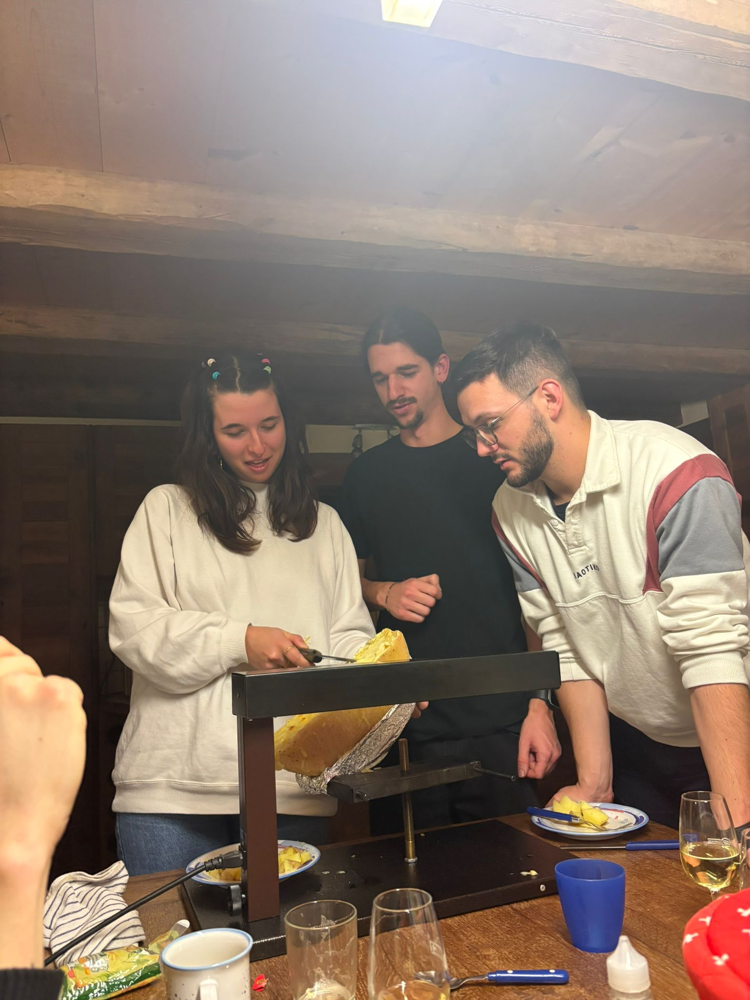
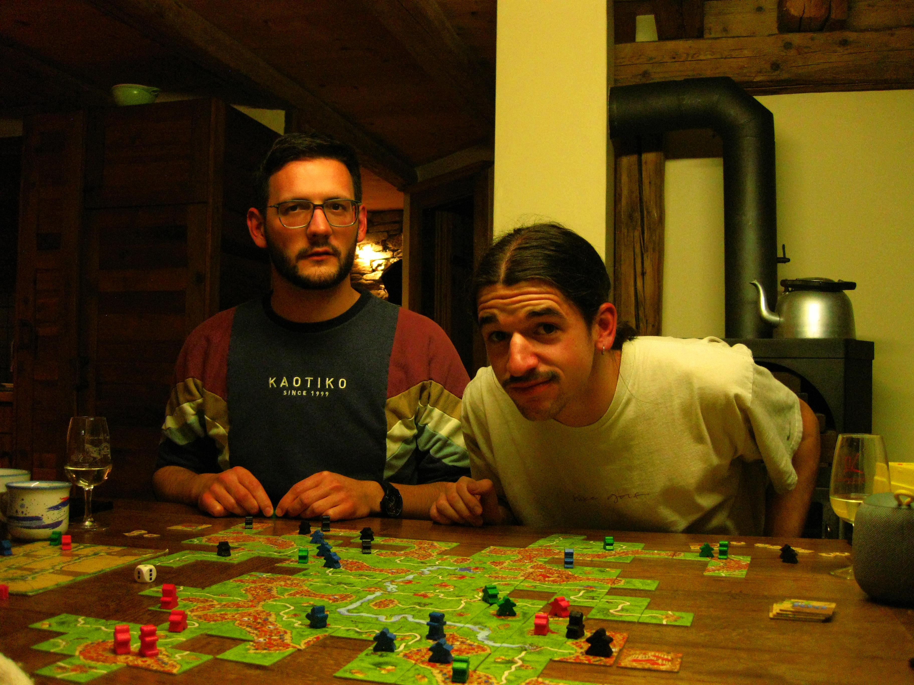
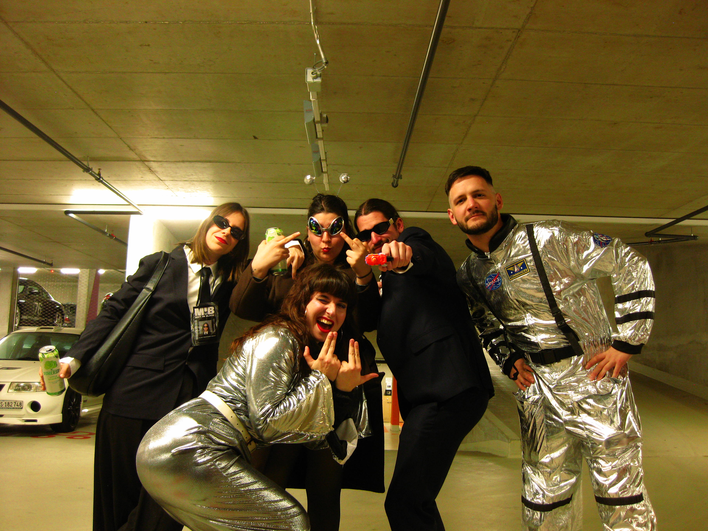
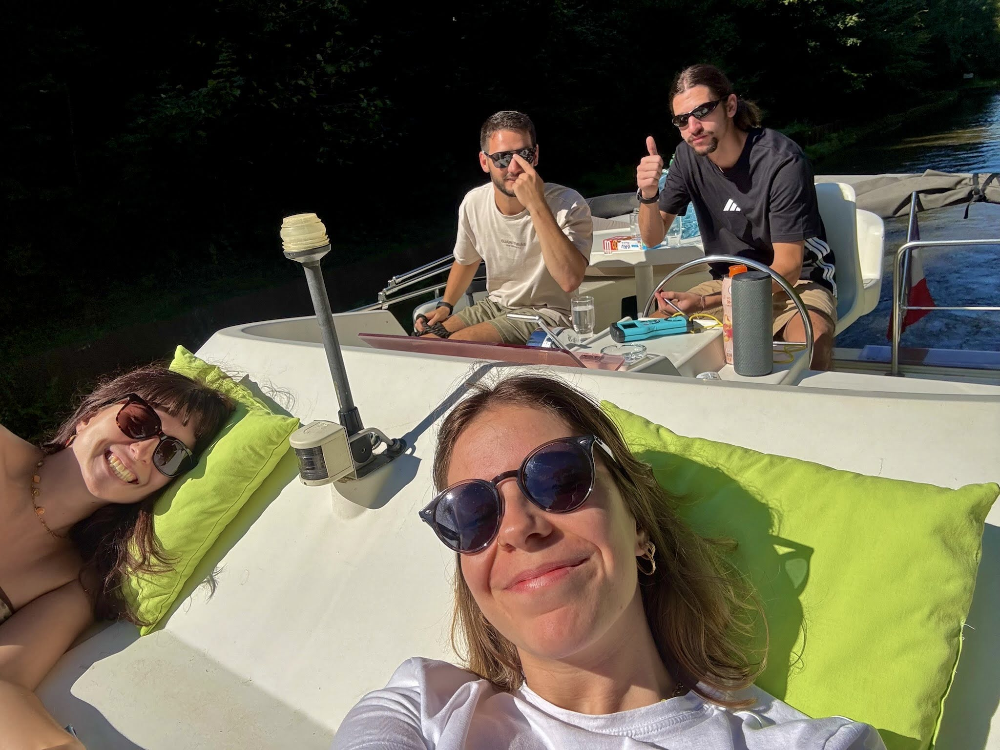
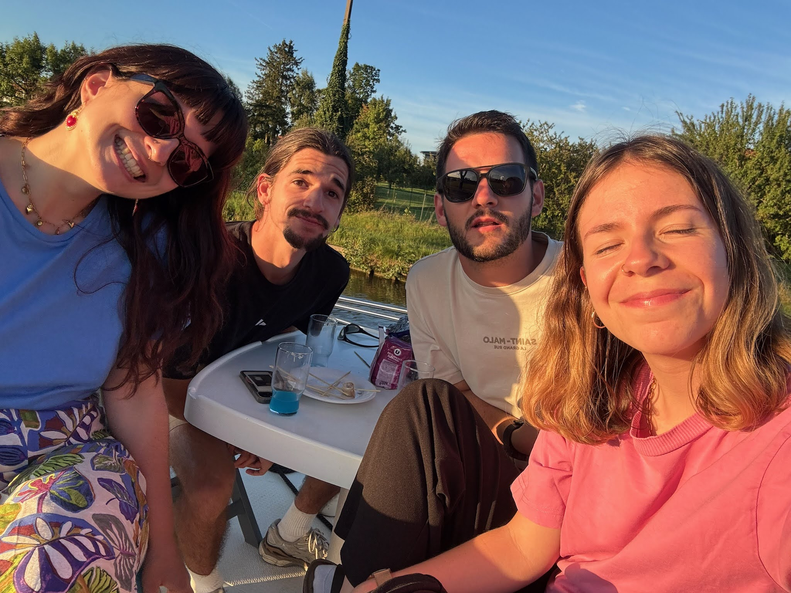

Écoutez nos sons
Cliquez sur les pochettes pour streamer la légende.
Toujours entre deux cantons, le pied sur l'accélérateur et l'esprit posé. Gugus, c'est l'électron libre de la bande. Qu'il soit en train de chiller dans son QG neuchâtelois ou de redescendre sur Saillon pour capter RM, il ne passe jamais inaperçu. Avec le Noir et Patcholle dans les parages, la soirée est toujours assurée de déraper... dans le bon sens.
Le ministre des finances et le pilote officiel du crew ! Pipoudou gère les affaires chez Dé-Eux le jour, et régale l'équipe à grands coups de shots la nuit. Entre deux anecdotes légendaires sur l'armée, tu le trouveras au volant de sa fidèle Opel Corsa, toujours prêt à embarquer l'équipe pour la prochaine expédition. C'est le sang, tout simplement.
L'âme artistique et l'ergo attitrée des copines. Tathilde débarque avec une dégaine unique, sa Polo qui fait de la résistance, et ses tatouages qui racontent des histoires. Ne te fie pas aux apparences, elle gère autant que ton gadjo (voire plus). Toujours là pour distribuer les good vibes et balancer des bisous à Mateo. Une vraie icône de la street.
Le cerveau tech et l'étoile montante de Fribourg. Depuis la Rue de la Carrière, Latchoup code l'avenir du groupe tout en préparant la montée en puissance du crew. Validé par sa meuf et redouté par les bugs informatiques, il s'assure que tout le monde reste à la page. C'est d'ailleurs grâce à ses mises à jour que ce site est en ligne, tu captes ?
Cliquez sur les pochettes pour streamer la légende.








